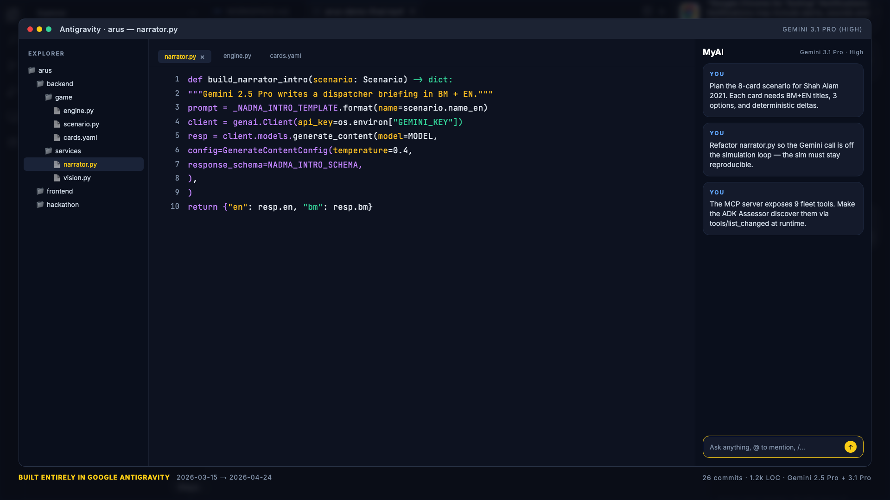

Klang Valley went under.
WHAT WE HAVE — WHAT WE NEED
Three lenses, one engine.
PLAY
You are Datuk Nadia at NADMA.
- 8 incoming calls in 7 minutes
- 4 gauges: lives · assets · trust · time
- Manual drone dispatch on the 3D map
- Bilingual BM/EN throughout
COACH
Same game · AI mentor whispers.
- 2-stage Google ADK agent
- Stage 1: Assessor · 9 MCP tools
- Stage 2: Recommender · ghost drone on map
- Bilingual chain-of-thought streamed live
WATCH AI
Hands-free. You watch.
- 5-stage SequentialAgent pipeline
- Assess → Strategise → Dispatch → Analyse → Brief
- Real MCP tool calls every ~40s
- Bilingual agency brief written at the end
Gemini at the boundary, not the loop.
Not decoration. Data.
What you're seeing
20 × 20 typed-cell grid. Each cell carries a terrain type, water level, resident count, and evac capacity — stored as plain data, not an LLM hallucination.
locality.py maps every cell index to a real Malaysian kampung name from Kelantan and Johor. When a card says "Incoming: Taman Sri Muda", the coordinate (6, 8) is real.
A* over road cells computes drone paths. When BOMBA dispatches to rescue, Alpha drone actually walks the shortest path.
9 MCP tools are discovered by both ADK agents at runtime via tools/list_changed — no hard-coded drone IDs anywhere.
Google tooling, top to bottom.
tools/list_changedOn your shoulder · or hands free.
COACH
Assessor
Queries 9 MCP fleet tools for current state
Recommender
Picks best option · places ghost drone · bilingual rationale
Follow, or override.
WATCH AI
Assess
Reads fleet state
Strategise
Ranks options
Dispatch
Calls fleet.dispatch
Analyse
Resolves deltas
Brief
BM + EN report
Your drill, beside 2021 reality.
Entire hackathon, in Antigravity.

From drill to platform.
Citizen drill shipped
One scenario · three modes · bilingual · Cloud Run live · full debrief with real 2021 comparison · live MetMalaysia feed.
Hardening + Kedah scenario
2022 Yan floods scenario pack · Redis session store for concurrency · COACH-mode telemetry on override rates · accessibility audit.
Partnership + education
Pilot with NADMA + MOE in 3 Selangor schools · teacher dashboard · multilingual (Tamil, Mandarin, Iban) · CESCG '27 paper.
Open platform
Open-source MCP tool layer · in-browser scenario editor · live Portal Bencana + InfoBanjir integration · MMEA sensor telemetry.
Cross-hazard
Same engine, new cards: wildfire (haze), earthquake (Ranau 2015), landslide. ASEAN DRR NGO partnerships. Insurance premium tie-in.
"Your swift decision to deploy BOMBA to Taman Sri Muda despite a 25-minute ETA reflects a proactive approach — the same dilemma NADMA dispatchers faced when the Klang River crossed danger level on the night of 18 December 2021…"